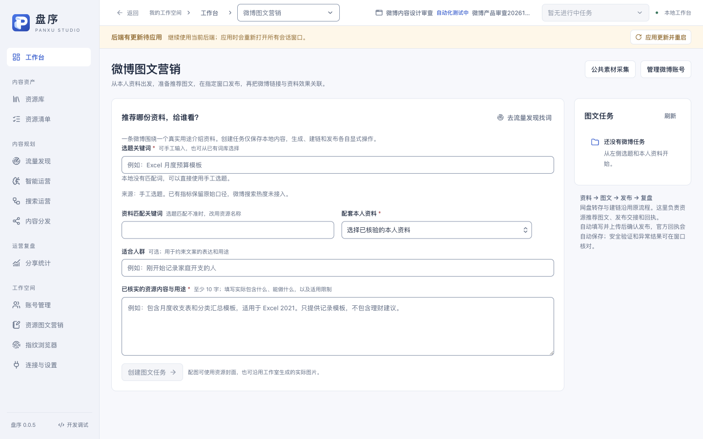
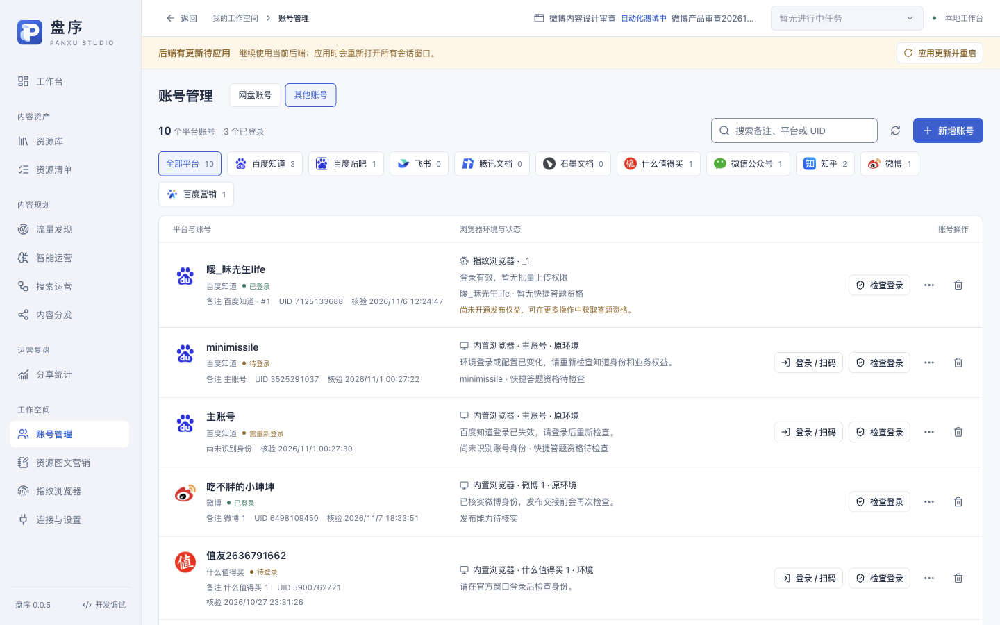
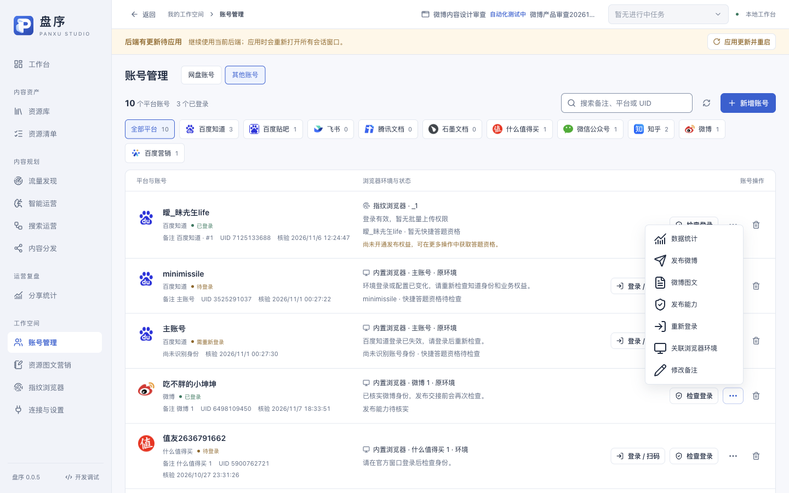
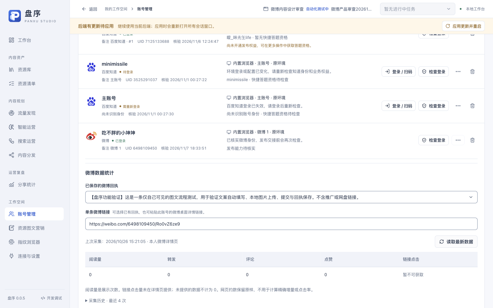
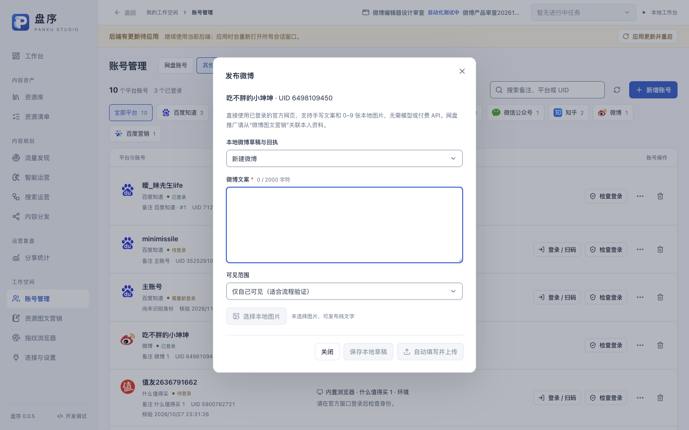
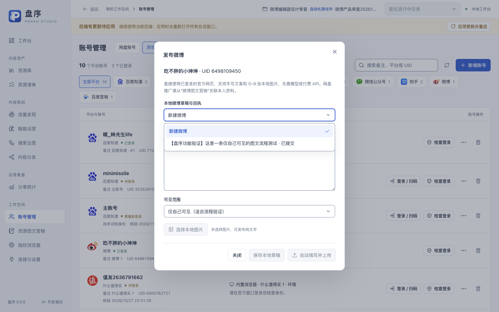

2026-11-07 · 当前源码前端 · 1440×900任务专属窗口 · 只读
结论：存在结构性缺陷。当前已能支持单次资源推荐及手写发布，但内容入口、稿件组织、多账号发布和复盘仍分散，尚不足以支撑持续运营。现有白色排版、账号归属、发布确认和缺失指标处理应保留。
| 优先级 | 问题 | 证据与边界 | 建议 |
|---|---|---|---|
| P1 | 内容入口分裂 | 步骤1、3、5、6；营销任务与直接发布分别读取weibo.history和weiboPosts.list。 | 把微博日常操作汇总到一个内容工作区，账号管理保留登录、环境、权限。内容工作区提供新建内容、草稿、待发布、已发布和待处理。 |
| P1 | 资料绑定过早，选题与内容类型偏窄 | 步骤1；Setup.tsx要求copyId与evidence；营销输入仅围绕资料推荐。已有公共素材供给能交付到直接发布草稿，不等于营销入口已覆盖这些类型。 | 允许先保存选题/草稿，后关联资料；提供教程技巧、问题解答、资源推荐、经验分享等内容类型。发布包含资料入口时再验证归属与权限。 |
| P1 | 发布流程暴露过多内部步骤 | 后半流程仅源码检查：Workflow.tsx先生成图文方案再生成实际图；Delivery.tsx导出图文包后上传；marketing.prepare必选本地目录。 | 将封面、附件和发布准备由应用统一管理，导出图文包作为可选操作；保留内容审阅、身份核对、可见范围和显式最终发布确认。 |
| P1 | 多账号的内容组织还不充分 | 源码：任务在Delivery阶段才选账号；marketing.create以相同关键词+资料返回原任务，去重条件不含目标账号。当前只有一条微博账号，未做多号实际发布。 | 以一份选题为基础，显式派生不同账号的内容版本和独立发布项；展示账号定位、文风、状态和排期，继续复用原浏览器环境，不在此重复配置代理。 |
| P2 | 效果数据没有形成运营决策 | 步骤4；Statistics.tsx提供单条指标与历史表。 | 先做已发布列表、采集时间、可比指标排序和同一内容的历史变化；可用时关联自有落地页访问或网盘结果，并分别标明数据来源。不能把落地页访问冒充微博官方链接点击。 |
| P2 | 选题辅助缺少明确的微博用途判断 | 步骤1；当前从本地词库取候选，界面诚实说明微博热度未接入。 | 补充目标人群、真实问题、开头切入点、已有资料匹配理由、是否重复发过；先帮助判断写什么，再考虑热榜数据。 |






主要控件具有可识别文字，弹窗有明确关闭操作和焦点边框。辅助文字较小且偏淡，需另做对比度测量；本轮未验证完整键盘路径、读屏行为或缩放，不给出可访问性合规结论。
先统一微博内容工作区和稿件状态，再允许选题先存、资料后补；随后简化发布准备、增加按账号派生内容，最后做发布列表和数据比较。不建议先增加一组独立热度或账号配置页面。
两个test:session运行仅导航和打开本地表单、菜单及缓存统计；无文本修改、保存、真实数据刷新、生成、上传或发布。测试窗口 fd2101db-0c34-4f01-81bf-bd914c90dd4a、60b23c23-2a46-46e2-bf47-c7b16db637a4 已关闭，窗口清单仅剩main，并已聚焦main。界面显示后端有更新待应用，本轮未应用或重启；实际截图对应当前前端与已加载后端。没有运行单元或全量功能套件，也没有改动产品代码。
选题推荐、内容类型及运营流程建议属于基于现状的产品判断，不是对微博平台算法、流量或转化效果的承诺。完整截图与本轮运行记录保存在同目录。